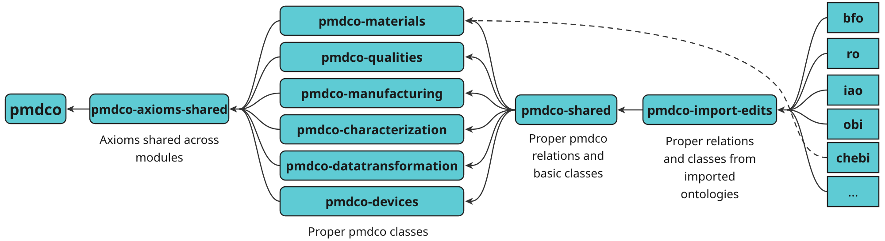
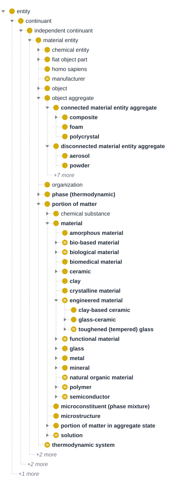
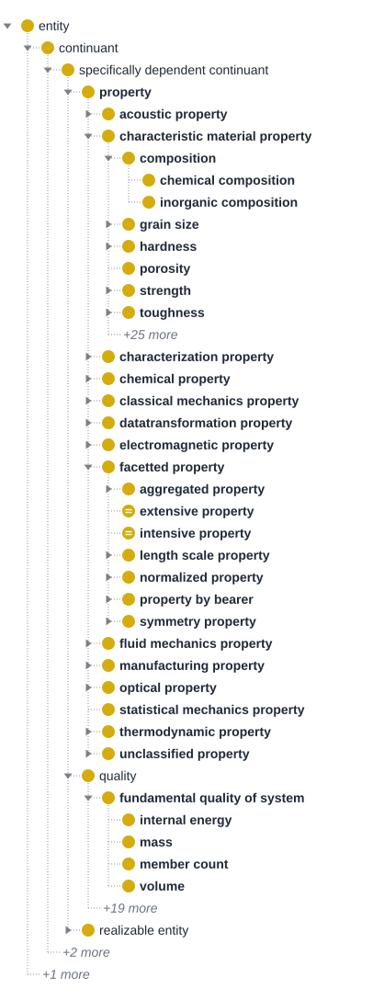
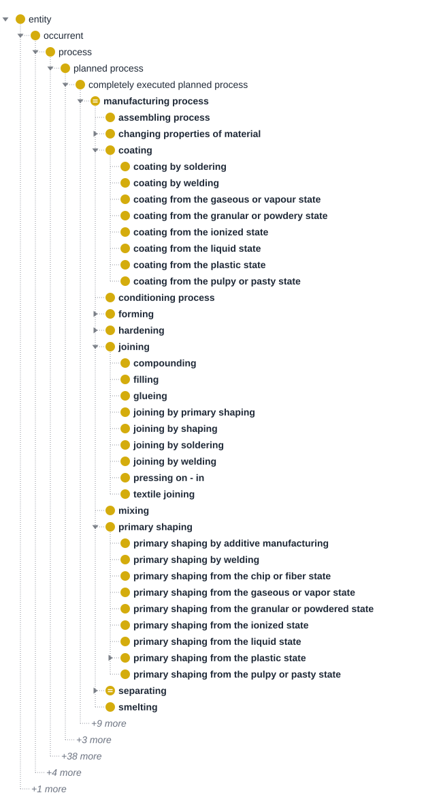
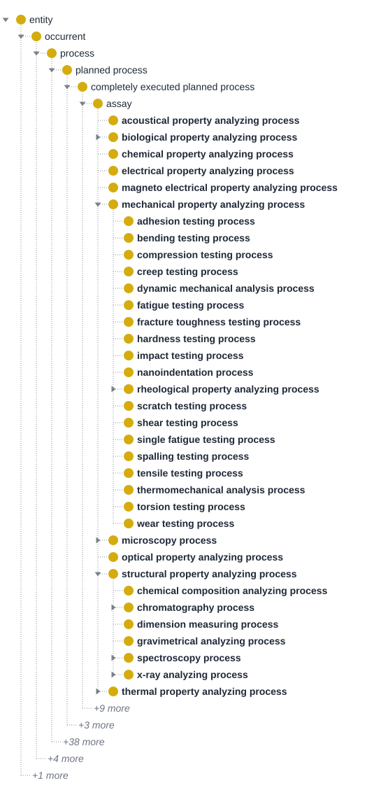
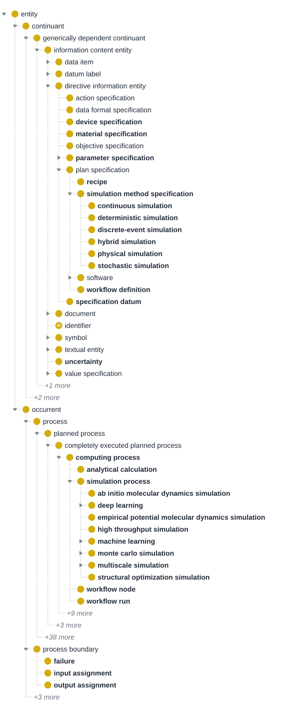
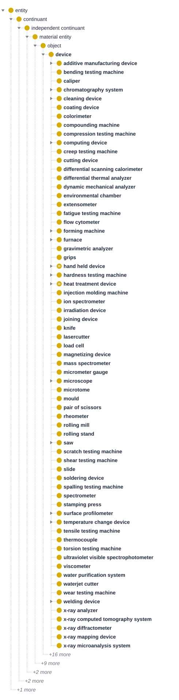
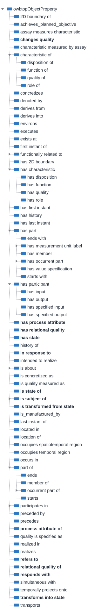
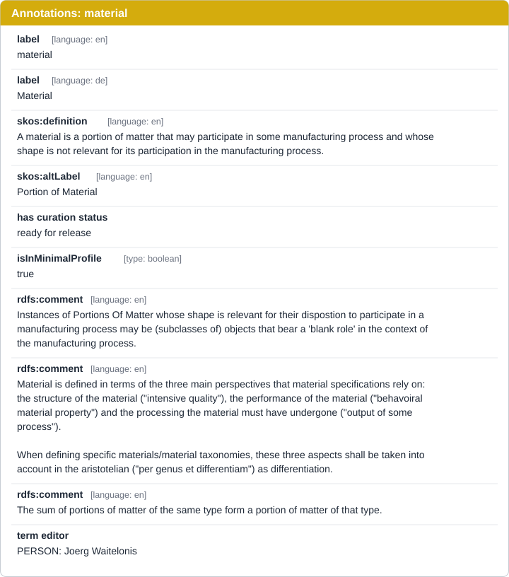
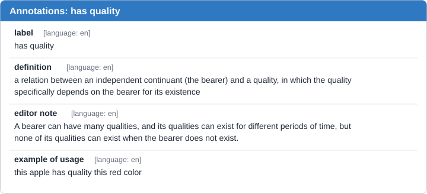

Ontology Structure
Modularization
Modules in ontology are formally defined, self-contained, and reusable fragments of an ontology that represent specific conceptual subdomains. They are engineered to support logic-based reasoning, interoperability, and tractable querying, allowing large or complex ontologies to be efficiently developed, understood, and maintained by dividing them into coherent, manageable parts. These modules make it possible to approach ontology engineering in a divide-and-conquer manner, facilitating reuse and integration across different domains and applications. PMDco defines six primary modules central to MSE, naming material, material qualities, material manufacturing, material characterization, data transformation, and devices.
Furthermore, in ODK-based ontology modularization, modules such as import-edit, shared, and axioms-shared play distinct roles. The import-edit module contains external ontology terms and their logical extensions, supporting controlled editing and updates without manual changes to the imported content. The shared module aggregates terms or patterns that must be reused across different ontology parts, promoting interoperability between collections. The axioms-shared module collects logical axioms that are common and essential for reasoning across modules, ensuring consistency and coordination within the ontology system. As seen in below figure, PMDco is eventually created by unifying all mentioned ontology modules.

PMDco V3.x.x modularization
In a modularized ontology, key concepts such as classes and object properties are organized into distinct modules that capture specific domains or subdomains. Each module contains related classes, which denote the core concepts of the domain, along with their corresponding object properties, which describe relationships between these concepts and other entities. This structure allows for targeted development and maintenance, where groups of interrelated classes and properties can be managed, reused, and evolved independently while supporting interoperability through well-defined module boundaries.
The complete list of PMDco classes, object properties, data properties, annotation properties and individuals can be found in the Widoco documentation page.
The following section provide example concepts related to different ontology modules.
Classes
The class names below are the ontology's own labels, and each definition is taken from the ontology. The interactive tree at the start of each module lists all classes of that module. Greyed entries are superclasses from other modules, shown for context. The figure after it highlights the main branches, and bold marks PMDco classes.
1. Materials module
- bfoentity
- bfocontinuant
- bfogenerically dependent continuant
- iaoinformation content entity
- iaodirective information entity
- pmdmaterial specification
- iaoidentifier
- iaodirective information entity
- iaoinformation content entity
- bfoindependent continuant
- bfoimmaterial entity
- bfocontinuant fiat boundary
- bfofiat line
- pmdslip direction
- bfofiat point
- pmdlattice point
- bfofiat surface
- pmdgrain boundary
- pmdhigh angle grain boundary
- pmdsmall angle grain boundary
- pmdtwin boundary
- pmdslip plane
- pmdgrain boundary
- bfofiat line
- bfosite
- pmddislocation
- pmdedge dislocation
- pmdmixed dislocation
- pmdscrew dislocation
- pmdmixed dislocation
- pmdedge dislocation
- pmdinterstitial site
- pmdvacancy (crystal)
- pmddislocation
- pmdunit cell
- bfocontinuant fiat boundary
- bfomaterial entity
- chebichemical entity
- chebichemical substance
- chebipure substance
- pmdportion of pure chemical element
- pmdportion of aluminium
- pmdportion of antimony
- pmdportion of argon
- pmdportion of arsenic
- pmdportion of barium
- pmdportion of beryllium
- pmdportion of bismuth
- pmdportion of bohrium
- pmdportion of boron
- pmdportion of bromine
- pmdportion of cadmium
- pmdportion of caesium
- pmdportion of calcium
- pmdportion of carbon
- pmdportion of cerium
- pmdportion of chlorine
- pmdportion of chromium
- pmdportion of cobalt
- pmdportion of copper
- pmdportion of erbium
- pmdportion of fluorine
- pmdportion of gallium
- pmdportion of germanium
- pmdportion of gold
- pmdportion of hafnium
- pmdportion of helium
- pmdportion of hydrogen
- pmdportion of indium
- pmdportion of iodine
- pmdportion of iridium
- pmdportion of iron
- pmdportion of krypton
- pmdportion of lanthanum
- pmdportion of lead
- pmdportion of lithium
- pmdportion of magnesium
- pmdportion of manganese
- pmdportion of mercury
- pmdportion of molybdenum
- pmdportion of neodymium
- pmdportion of neon
- pmdportion of nickel
- pmdportion of niobium
- pmdportion of nitrogen
- pmdportion of osmium
- pmdportion of oxygen
- pmdportion of palladium
- pmdportion of phosphorus
- pmdportion of platinum
- pmdportion of potassium
- pmdportion of rhenium
- pmdportion of rhodium
- pmdportion of ruthenium
- pmdportion of samarium
- pmdportion of scandium
- pmdportion of selenium
- pmdportion of silicon
- pmdportion of silver
- pmdportion of sodium
- pmdportion of sulfur
- pmdportion of tantalum
- pmdportion of tellurium
- pmdportion of thallium
- pmdportion of tin
- pmdportion of titanium
- pmdportion of tungsten
- pmdportion of uranium
- pmdportion of vanadium
- pmdportion of xenon
- pmdportion of yttrium
- pmdportion of zinc
- pmdportion of zirconium
- pmdportion of pure chemical element
- chebipure substance
- chebichemical substance
- bfoobject
- pmdcrystal
- pmdalloy crystal
- pmdceramic crystal
- pmdcrystallite
- pmdelemental crystal
- pmdsingle crystal
- pmdprecipitate
- pmdcrystal
- bfoobject aggregate
- pmdconnected material entity aggregate
- pmdcomposite
- pmdstructural composite
- pmdlaminated composite
- pmdsandwich panel composite
- pmdstructural composite
- pmdfoam
- pmdpolycrystal
- pmdcomposite
- pmddisconnected material entity aggregate
- pmdaerosol
- pmdpowder
- pmdconnected material entity aggregate
- pmdphase (thermodynamic)
- pmdmetastable phase
- pmdstable phase
- pmdportion of matter
- chebichemical substance
- chebipure substance
- pmdportion of pure chemical element
- pmdportion of aluminium
- pmdportion of antimony
- pmdportion of argon
- pmdportion of arsenic
- pmdportion of barium
- pmdportion of beryllium
- pmdportion of bismuth
- pmdportion of bohrium
- pmdportion of boron
- pmdportion of bromine
- pmdportion of cadmium
- pmdportion of caesium
- pmdportion of calcium
- pmdportion of carbon
- pmdportion of cerium
- pmdportion of chlorine
- pmdportion of chromium
- pmdportion of cobalt
- pmdportion of copper
- pmdportion of erbium
- pmdportion of fluorine
- pmdportion of gallium
- pmdportion of germanium
- pmdportion of gold
- pmdportion of hafnium
- pmdportion of helium
- pmdportion of hydrogen
- pmdportion of indium
- pmdportion of iodine
- pmdportion of iridium
- pmdportion of iron
- pmdportion of krypton
- pmdportion of lanthanum
- pmdportion of lead
- pmdportion of lithium
- pmdportion of magnesium
- pmdportion of manganese
- pmdportion of mercury
- pmdportion of molybdenum
- pmdportion of neodymium
- pmdportion of neon
- pmdportion of nickel
- pmdportion of niobium
- pmdportion of nitrogen
- pmdportion of osmium
- pmdportion of oxygen
- pmdportion of palladium
- pmdportion of phosphorus
- pmdportion of platinum
- pmdportion of potassium
- pmdportion of rhenium
- pmdportion of rhodium
- pmdportion of ruthenium
- pmdportion of samarium
- pmdportion of scandium
- pmdportion of selenium
- pmdportion of silicon
- pmdportion of silver
- pmdportion of sodium
- pmdportion of sulfur
- pmdportion of tantalum
- pmdportion of tellurium
- pmdportion of thallium
- pmdportion of tin
- pmdportion of titanium
- pmdportion of tungsten
- pmdportion of uranium
- pmdportion of vanadium
- pmdportion of xenon
- pmdportion of yttrium
- pmdportion of zinc
- pmdportion of zirconium
- pmdportion of pure chemical element
- chebipure substance
- pmdmaterial
- pmdbiomedical material
- pmdceramic
- pmdnatural ceramic
- pmdnon-clay ceramic
- pmdoxide ceramic
- pmdsilicate ceramic
- pmdclay-based ceramic
- pmdsilicate ceramic
- pmdnatural ceramic
- pmdengineered material
- pmdclay-based ceramic
- pmdglass-ceramic
- pmdfunctional material
- pmdstructural material
- pmdglass
- pmdbioactive glass
- pmdnon-silicate glass
- pmdsilicate glass
- pmdspecialty glass
- pmdmetal
- pmdalloy
- pmdaluminium alloy
- pmdcopper alloy
- pmdnickel alloy
- pmdtitanium alloy
- pmdferrous metal
- pmdnon-ferrous metal
- pmdaluminium alloy
- pmdcopper alloy
- pmdnickel alloy
- pmdtitanium alloy
- pmdalloy
- pmdmineral
- pmdnatural organic material
- pmdpolymer
- pmdsemiconductor
- pmdmicroconstituent (phase mixture)
- pmdmicrostructure
- pmdportion of matter in aggregate state
- pmdatom gas
- pmdgas
- pmdportion of technical vacuum
- pmdliquid
- pmdmesomorphic
- pmdplasma
- pmdsolid
- pmdsolid solution
- pmdinterstitital solid solution
- pmdsubstitutional solid solution
- pmdsolid solution
- pmdsupercritical fluid
- pmdsuprafluid
- pmdsuprasolid
- pmdsolution
- pmdsolid solution
- pmdinterstitital solid solution
- pmdsubstitutional solid solution
- pmdsolid solution
- chebichemical substance
- pmdthermodynamic system
- chebichemical entity
- bfoimmaterial entity
- bfospecifically dependent continuant
- pmdproperty
- pmdcharacteristic material property
- pmdbioactive
- pmdbiocompatible
- pmdbiodegradability
- pmdfiller role
- pmdlaminate ply role
- pmdlubricant role
- pmdmatrix role
- pmdprecipitate role
- pmdsandwich core role
- pmdsandwich sheet role
- pmdbioactive
- pmdchemical property
- pmdsolute role
- pmdsolvent role
- pmdelectromagnetic property
- pmdband gap
- pmdelectrical conductivity
- pmdsemiconductivity
- pmdsuperconductivity
- pmdfacetted property
- pmdproperty by bearer
- pmda portions property
- pmdband gap
- pmdelectrical conductivity
- pmdsemiconductivity
- pmdsuperconductivity
- pmdfiller role
- pmdfundamental quality of matter
- pmdpressure
- pmdlaminate ply role
- pmdmaterial performance property
- pmdmatrix role
- pmdan objects property
- pmdprecipitate role
- pmdsandwich core role
- pmdsandwich sheet role
- pmda portions property
- pmdproperty by bearer
- pmdoptical property
- pmdnonlinear optical property
- pmdthermodynamic property
- pmddaughter phase role
- pmdparent phase role
- pmdthermodynamic driving force
- pmdunclassified property
- pmdatomic bond
- pmdcovalent bond
- pmdionic bond
- pmdmetallic bond
- pmdenergy
- pmdmaterial performance property
- pmdmedical application role
- pmdphysical relational quality
- pmdvolume ratio
- pmdvolume fraction
- pmdvolume ratio
- pmdatomic bond
- pmdcharacteristic material property
- bfoquality
- pmdband gap
- pmdenergy
- pmdfundamental quality of matter
- pmdpressure
- pmdpotential
- pmdchemical potential
- pmdelectric potential
- bforelational quality
- pmdgeometric relational quality
- pmdangle
- pmdangle of misalignment (crystallography)
- pmdangle
- pmdgeometric relational quality
- pmdspatial extend
- pmdlength
- pmddiameter
- pmdlength
- bforealizable entity
- pmdbioactive
- pmdbiocompatible
- pmdbiodegradability
- pmddaughter phase role
- bfodisposition
- bfofunction
- obimechanical function
- bfofunction
- pmdlubricant role
- pmdparent phase role
- pmdbioactive
- pmdproperty
- bfogenerically dependent continuant
- bfooccurrent
- bfoprocess
- gobiological process
- pmdgeological process
- pmdphase transformation
- pmdeutectoid phase transformation
- pmdperitectic phase transformation
- pmdprecipitation (phase)
- pmdspinodal decomposition
- cobplanned process
- cobcompletely executed planned process
- pmdmanufacturing process
- pmdhardening
- pmdion-exchange hardening
- pmdhardening
- pmdmanufacturing process
- cobcompletely executed planned process
- pmdpolymerization
- bfoprocess
- bfocontinuant

Examples:
bfo:material entity – the BFO superclass of all materials and objects: an independent continuant that has some portion of matter as continuant part.
chebi:chemical entity – imported from ChEBI: a physical entity of interest in chemistry, including molecular entities, parts thereof, and chemical substances.
pmd:connected material entity aggregate – An object aggregate that is a mereological sum of separate material entities, which adhere to one another through chemical bonds or physical junctions that go beyond gravity.
Examples: the atoms of a molecule, the molecules forming the membrane of a cell, the epidermis in a human body.
pmd:disconnected material entity aggregate – An object aggregate that is a mereological sum of scattered (i.e. spatially separated) material entities, which do not adhere to one another through chemical bonds or physical junctions but, instead, relate to one another merely on grounds of metric proximity. The material entities are separated from one another through space or through other material entities that do not belong to the group.
Examples: a heap of stones, a colony of honeybees, a group of synapses.
pmd:material – A portion of matter that may participate in some manufacturing process and whose shape is not relevant for its participation in the manufacturing process.
Some concrete material definitions:
pmd:metal – A material characterized by high electrical and thermal conductivity, ductility, and metallic bonding.
pmd:ceramic – A non-metallic, inorganic material characterized by high hardness, brittleness, and heat resistance, commonly used in engineering applications.
2. Qualities module
- bfoentity
- bfocontinuant
- bfogenerically dependent continuant
- iaoinformation content entity
- iaodata item
- pmdcomposition data item
- pmdchemical composition data item
- pmdcomposition data item
- obivalue specification
- obicategorical value specification
- pmdslip system (3D)
- pmdduration
- pmdlight exposure
- obiscalar value specification
- pmdfraction value specification
- obicategorical value specification
- iaodata item
- pmdnature constant
- iaoinformation content entity
- bfoindependent continuant
- bfoimmaterial entity
- bfocontinuant fiat boundary
- bfofiat surface
- pmdphase boundary (spatial)
- pmdsection
- bfofiat surface
- bfosite
- pmdcrack
- pmddislocation
- pmdnotch
- pmdpore
- bfocontinuant fiat boundary
- bfomaterial entity
- chebichemical entity
- chebiatom
- chebichemical substance
- chebipure substance
- pmdportion of pure chemical element
- chebipure substance
- bfofiat object part
- pmdbulk
- pmdsurface layer (fiat object part)
- pmdfracture surface
- pmdmetallographic section (surface)
- pmdmacrosection (metallography)
- bfoobject
- pmdcrystal
- pmdlamella
- pmddevice
- pmdcoating device
- pmdcutting device
- pmdheat treatment device
- pmdirradiation device
- pmdjoining device
- pmdload cell
- pmdmagnetizing device
- pmdtemperature change device
- pmdcrystal
- bfoobject aggregate
- pmda mol of entites
- pmdatomic structure
- pmdconnected material entity aggregate
- pmdcomposite
- pmdstructural composite
- pmdsandwich panel composite
- pmdstructural composite
- pmdpolycrystal
- pmdcomposite
- pmdlamellae
- pmdphase (thermodynamic)
- pmdlamella
- pmdportion of matter
- chebichemical substance
- chebipure substance
- pmdportion of pure chemical element
- chebipure substance
- pmdmaterial
- pmdportion of matter in aggregate state
- pmdgas
- pmdliquid
- pmdsolid
- pmdsolution
- chebichemical substance
- pmdthermodynamic system
- chebichemical entity
- bfoimmaterial entity
- bfospecifically dependent continuant
- pmdproperty
- pmdacoustic property
- pmdacoustic absorption coefficient
- pmdsound insulation index
- pmdsound reflection coefficient
- pmdspeed of sound
- pmdcharacteristic material property
- pmdaverage lamella thickness
- pmdbioactive
- pmdbiocompatible
- pmdbioresorbable
- pmdbiocompatible
- pmdbiodegradability
- pmdbioinert
- pmdBurgers vector
- pmdcatalytic disposition
- pmdcomposition
- pmdchemical composition
- pmdinorganic composition
- pmdcontact angle
- pmdcorrosion resistant
- pmdcrystallographic texture
- pmddefect role
- pmddisposition of a phase to transform
- pmdelastic strain energy
- pmdfiller role
- pmdgrain size
- pmdcrystal grain size
- pmdhardness
- pmdindentation hardness
- pmdbrinell hardness
- pmdBrinell 2.5 62.5 ISO 6506
- pmdbrinell hardness
- pmdrebound hardness
- pmdscratch hardness
- pmdMohs hardness
- pmdindentation hardness
- pmdinterface tension
- pmdsurface tension
- pmdlaminate ply role
- pmdlubricant role
- pmdmatrix role
- pmdporosity
- pmdprecipitate role
- pmdreducing agent role
- pmdresin role
- pmdsandwich core role
- pmdsandwich sheet role
- pmdspecific surface area
- pmdstrain at break
- pmdstrength
- pmdadhesion strength
- pmdfatigue strength
- pmdflexural strength
- pmdshear strength
- pmdspecific strength
- pmdultimate compressive strength
- pmdultimate tensile strength
- pmdyield stress
- pmdlower yield strength
- pmdupper yield strength
- pmdtoughness
- pmdfracture toughness
- pmdimpact strength
- pmdweathering resistance
- pmdcharacterization property
- pmdchromatography function
- pmdtesting function
- pmdchemical property
- pmdeduct
- pmdproduct (chemical reaction)
- pmdsolute role
- pmdsolvent role
- pmdclassical mechanics property
- pmdbulk modulus
- pmdcoefficient of friction
- pmdelastic modulus
- pmdflexural modulus
- pmdelasticity
- pmdelongation
- pmdpercentage elongation
- pmdpercentage elongation after fracture
- pmdpercentage permanent elongation
- pmdpercentage elongation
- pmdextension
- pmdpercentage extension
- pmdpercentage permanent extension
- pmdpercentage total extension at fracture
- pmdpercentage extension
- pmdforce
- pmdnormal force
- pmdcompressive force
- pmdtensile force
- pmdparallel force
- pmdweight
- pmdnormal force
- pmdpercentage reduction of area
- pmdpoisson's ratio
- pmdshear modulus
- pmdspecific elastic modulus
- pmdstiffness
- pmdstrain
- pmdcreep strain
- pmdelastic strain
- pmdengineering strain
- pmdmultiaxial strain
- pmduniaxial strain
- pmdplastic strain
- pmdtrue strain
- pmdstress
- pmdcreep stress
- pmdengineering stress
- pmdmultiaxial stress
- pmduniaxial stress
- pmdnormal stress
- pmdshear strength
- pmdshear stress
- pmdtrue stress
- pmddatatransformation property
- pmdsimulation entity role
- pmdworkflow executor role
- pmdelectromagnetic property
- pmdband gap
- pmddielectric constant
- pmdelectric charge
- pmdelectrical capacitance
- pmdelectrical conductance
- pmdelectrical conductivity
- pmdsemiconductivity
- pmdsuperconductivity
- pmdelectrical resistance
- pmdsaturation magnetization
- pmdfacetted property
- pmdaggregated property
- pmdaveraged property
- pmdaverage lamella thickness
- pmdmaxiumum value property
- pmdminimum value property
- pmdquantile property
- pmdaveraged property
- pmdextensive property
- pmdintensive property
- pmdlength scale property
- pmdcontinuum property
- pmdmacroscale property
- pmdmesoscale property
- pmdmicroscale property
- pmdnanoscale property
- pmdnormalized property
- pmdper count property
- pmdper mol property
- pmdper mass property
- pmdspecific heat capacity (per mass)
- pmdspecific mass energy
- pmdper mol property
- pmdper volume property
- pmdspecific volume energy
- pmdvolumetric heat capacity
- pmdper count property
- pmdproperty by bearer
- pmda portions property
- pmdactivity (thermodynamic)
- pmdband gap
- pmdbulk modulus
- pmdcomposition
- pmdchemical composition
- pmdinorganic composition
- pmdcorrosion resistant
- pmdcrystallographic texture
- pmddielectric constant
- pmddielectric strength
- pmdeduct
- pmdelastic modulus
- pmdflexural modulus
- pmdelastic strain energy
- pmdelectrical conductivity
- pmdsemiconductivity
- pmdsuperconductivity
- pmdfiller role
- pmdfundamental quality of matter
- pmdmass density
- pmdpressure
- pmdtemperature
- pmdhardness
- pmdindentation hardness
- pmdbrinell hardness
- pmdBrinell 2.5 62.5 ISO 6506
- pmdbrinell hardness
- pmdrebound hardness
- pmdscratch hardness
- pmdMohs hardness
- pmdindentation hardness
- pmdlaminate ply role
- pmdmaterial performance property
- pmdmatrix role
- pmdpoisson's ratio
- pmdrange order
- pmdlong-range order
- pmdmedium-range order
- pmdshort-range order
- pmdreducing agent role
- pmdshear modulus
- pmdspecific surface area
- pmdspeed of sound
- pmdstrain
- pmdcreep strain
- pmdelastic strain
- pmdengineering strain
- pmdmultiaxial strain
- pmduniaxial strain
- pmdplastic strain
- pmdtrue strain
- pmdstrain at break
- pmdstrength
- pmdadhesion strength
- pmdfatigue strength
- pmdflexural strength
- pmdshear strength
- pmdspecific strength
- pmdultimate compressive strength
- pmdultimate tensile strength
- pmdyield stress
- pmdlower yield strength
- pmdupper yield strength
- pmdstress
- pmdcreep stress
- pmdengineering stress
- pmdmultiaxial stress
- pmduniaxial stress
- pmdnormal stress
- pmdshear strength
- pmdshear stress
- pmdtrue stress
- pmdstress relaxation
- pmda sites property
- pmdBurgers vector
- pmdan object aggregates property
- pmdcrystal grain size
- pmdcrystallographic texture
- pmdrange order
- pmdlong-range order
- pmdmedium-range order
- pmdshort-range order
- pmdan objects property
- pmdblank role
- pmdchromatography function
- pmdcoating function
- pmdcut function
- pmddevice role
- pmdelectrical capacitance
- pmdelectrical conductance
- pmdelectrical resistance
- pmdforce
- pmdnormal force
- pmdcompressive force
- pmdtensile force
- pmdparallel force
- pmdweight
- pmdnormal force
- pmdheat treatment function
- pmdirradiation function
- pmdjoining function
- pmdmagnetizing function
- pmdprecipitate role
- pmdsandwich core role
- pmdsandwich sheet role
- pmdsound insulation index
- pmdstiffness
- pmdsurface energy
- pmdtemperature change function
- pmdtesting function
- pmdbulk property
- pmdfluid property
- pmdviscous fluid property
- pmdinterface property
- pmdacoustic absorption coefficient
- pmdcoefficient of friction
- pmdcontact angle
- pmdheat transfer coefficient
- pmdinterface tension
- pmdsurface tension
- pmdsound reflection coefficient
- pmdsurface property
- pmda portions property
- pmdsymmetry property
- pmdanisotropic property
- pmdcubic property
- pmdmonoclinic property
- pmdorthotropic property
- pmdtransversely isotropic property
- pmdtriclinic property
- pmdisotropic property
- pmdanisotropic property
- pmdaggregated property
- pmdfluid mechanics property
- pmdReynolds number
- pmdviscosity
- pmddynamic viscosity
- pmdextentional viscosity
- pmdkinematic viscosity
- pmdshear viscosity
- pmdvolume viscosity
- pmdmanufacturing property
- pmdblank role
- pmdcoating function
- pmddevice role
- pmdjoining function
- pmdmeasuring function
- pmdobstacle role
- pmdtemperature change function
- pmdoptical property
- pmddispersion
- pmdnonlinear optical property
- pmdoptical refraction
- pmdradiation absorption capability
- pmdradiation emitter
- pmdradiation reflection capability
- pmdradiation transmission capability
- pmdreflectivity
- pmdstatistical mechanics property
- pmdthermodynamic property
- pmdactivity (thermodynamic)
- pmddaughter phase role
- pmdheat capacity
- pmdmolar heat capacity
- pmdspecific heat capacity (per mass)
- pmdvolumetric heat capacity
- pmdheat transfer coefficient
- pmdparent phase role
- pmdphase boundary (realization)
- pmdmagnetic boundary
- pmdmixture boundary
- pmdstate of matter boundary
- pmdboiling point
- pmdeutectic point
- pmdmelting point
- pmdsublimation point
- pmdtriple point
- pmdstructural boundary
- pmdspecific heat capacity
- pmdthermodynamic driving force
- pmdunclassified property
- pmdadhesion
- pmdatomic bond
- pmdcovalent bond
- pmdhydrogen bond
- pmdionic bond
- pmdmetallic bond
- pmdauto-ignition temperature
- pmdbirefringence
- pmdbrittleness
- pmdclamping pressure
- pmdcoercivity
- pmdcomplex modulus
- pmddynamic modulus
- pmdloss tangent
- pmdloss modulus
- pmdstorage modulus
- pmddynamic modulus
- pmdcontaining magnetic species
- pmdcreep modulus
- pmdcritical pressure
- pmdcritical temperature
- pmdCurie temperature
- pmdcut function
- pmddefect density
- pmddielectric disposition
- pmddielectric strength
- pmddose equivalent
- pmddry mass
- pmdductile-brittle transition temperature
- pmdglass transition temperature
- pmdductility
- pmdmalleability
- pmddurability
- pmdcreep resistance
- pmdwear resistance
- pmdelectric field strength
- pmdelectric flux density
- pmdelectromotive force
- pmdemissivity
- pmdenergy
- pmdenthalpy
- pmdenthalpy of vaporization
- pmdmelting enthalpy
- pmdentropy
- pmdGibbs energy
- pmdHelmholtz energy
- pmdinteratomic interaction energy
- pmdinternal energy
- pmdkinetic energy
- pmdradiant energy
- pmdsurface energy
- pmdenthalpy
- pmdenvironmental temperature
- pmdextinction coefficient
- pmdflame resistance
- pmdflammability
- pmdflash point
- pmdfluid permeability
- pmdhardenable
- pmdheat treatment function
- pmdhumidity
- pmdimpact energy
- pmdinductance
- pmdirradiation function
- pmdluminous efficacy
- pmdmagnetic flux
- pmdmagnetic permeability
- pmdmagnetic susceptibility
- pmdmagnetizing function
- pmdmanufacturing function
- pmdmass diffusivity
- pmdmaterial fatigue
- pmdmaterial performance property
- pmdodor
- pmdoptical absorptance
- pmdoptical reflectance
- pmdoptical transmittance
- pmdorganic composition
- pmdphysical relational quality
- pmdmass concentration
- pmdmass ratio
- pmdmass fraction
- pmdmass mix ratio
- pmdmolar ratio
- pmdamount of substance
- pmdphysical rate quality
- pmdvolume ratio
- pmdvolume concentration
- pmdvolume fraction
- pmdvolume mix ratio
- pmdpiezoelectric coefficient
- pmdpixel density
- pmdplasticity
- pmdpoisson effect
- pmdpolymorphism of crystal
- pmdallotropy of an elemental crystal
- pmdproportion
- pmdradiant energy density
- pmdradiologic disposition
- pmdradiation emission capability
- pmdrefractive index
- pmdrelative isotopic mass
- pmdresilience
- pmdshape
- pmdgeometry shape
- pmdshape 3d
- pmdgeometry shape
- pmdspecific energy
- pmdspecific mass energy
- pmdspecific molar energy
- pmdspecific volume energy
- pmdstress relaxation
- pmdtemporal property
- pmdthermal capacity
- pmdthermal conductance
- pmdthermal conductivity
- pmdthermal diffusivity
- pmdthermal expansion coefficient
- pmdlinear thermal expansion coefficient
- pmdvolumetric thermal expansion coefficient
- pmdthermal insulation
- pmdthermal property
- pmdthermal shock resistance
- pmdthrust
- pmdvapor pressure
- pmdviscoelasticity
- pmdwater absorption
- pmdwork hardening coefficient
- pmdacoustic property
- bfoquality
- pmdactivity (thermodynamic)
- pmdband gap
- pmdBurgers vector
- pmdcomposition
- pmdchemical composition
- pmdinorganic composition
- pmdcrystallographic texture
- pmddielectric constant
- pmddielectric strength
- pmdelastic strain energy
- pmdelectric charge
- pmdelectrical capacitance
- pmdelectrical conductance
- pmdelectrical resistance
- pmdenergy
- pmdenthalpy
- pmdenthalpy of vaporization
- pmdmelting enthalpy
- pmdentropy
- pmdGibbs energy
- pmdHelmholtz energy
- pmdinteratomic interaction energy
- pmdinternal energy
- pmdkinetic energy
- pmdradiant energy
- pmdsurface energy
- pmdenthalpy
- pmdfundamental quality of matter
- pmdmass density
- pmdpressure
- pmdtemperature
- pmdfundamental quality of system
- pmdinternal energy
- pmdmass
- pmdvolume
- pmdpotential
- pmdchemical potential
- pmdelectric potential
- pmdgravitational potential
- pmdmultiaxial strain potential
- pmdhydrostatic mechanical potential
- pmduniaxial strain potential
- pmdthermal potential
- pmdrange order
- pmdlong-range order
- pmdmedium-range order
- pmdshort-range order
- bforelational quality
- pmdgeometric relational quality
- pmdangle
- pmdangle of misalignment (crystallography)
- pmddistance
- pmdangle
- pmdspatial relational quality
- pmdgeometric relational quality
- pmdspatial extend
- pmdarea
- pmdcross section area
- pmdlength
- pmddiameter
- pmdgrain size
- pmdcrystal grain size
- pmdinner diameter
- pmdouter diameter
- pmdgrain size
- pmdgauge length
- pmdextensometer gauge length
- pmdfinal gauge length after fracture
- pmdoriginal gauge length
- pmdheight
- pmdperimeter
- pmdcircumference
- pmdradius
- pmdthickness
- pmdwidth
- pmddiameter
- pmdvolume
- pmdarea
- pmdspecific surface area
- bforealizable entity
- pmdadhesion strength
- pmdbioactive
- pmdbiocompatible
- pmdbioresorbable
- pmdbiocompatible
- pmdbiodegradability
- pmdbioinert
- pmdcatalytic disposition
- pmddaughter phase role
- pmddefect role
- bfodisposition
- bfofunction
- pmdchromatography function
- pmdcoating function
- pmdcut function
- pmdheat treatment function
- pmdirradiation function
- pmdjoining function
- pmdmagnetizing function
- pmdtemperature change function
- pmdtesting function
- bfofunction
- pmddisposition of a phase to transform
- pmdeduct
- pmdfatigue strength
- pmdflexural strength
- pmdheat capacity
- pmdmolar heat capacity
- pmdspecific heat capacity (per mass)
- pmdvolumetric heat capacity
- pmdlubricant role
- pmdmanufacturing function
- pmdmeasuring function
- pmdobstacle role
- pmdparent phase role
- pmdphase boundary (realization)
- pmdmagnetic boundary
- pmdmixture boundary
- pmdstate of matter boundary
- pmdboiling point
- pmdeutectic point
- pmdmelting point
- pmdsublimation point
- pmdtriple point
- pmdstructural boundary
- pmdpolymorphism of crystal
- pmdallotropy of an elemental crystal
- pmdproduct (chemical reaction)
- pmdreducing agent role
- pmdshear strength
- pmdsimulation entity role
- pmdstrain at break
- pmdthermal property
- pmdultimate tensile strength
- pmdworkflow executor role
- pmdproperty
- bfogenerically dependent continuant
- bfooccurrent
- bfoprocess
- pmdabsorption of radiation
- pmdabsorption of corpuscular radiation
- pmdabsorption of wave radiation
- pmdaging process
- pmdchange of temperature
- pmdcooling
- pmdheating
- pmdchemical reaction
- pmdcorrosion
- pmddeformation
- pmdemission of radiation
- pmdemission of corpuscular radiation
- pmdemission of wave radiation
- pmdevolution of damage
- pmdcrack growth
- pmdpore growth
- pmdstructural and chemical decay
- pmdfatigue (reaction to repetitive loading)
- pmdfission
- pmdflow of electric charge
- pmdformation of notch or scratch
- pmdfriction
- pmdfusion
- pmdgeneration of magnetic field
- pmdheat flow
- pmdimpact
- pmdmaterial reacting process
- pmdmechanical process
- pmdloading process
- pmdphase transformation
- pmdchange of aggregate state
- pmdeutectic phase transformation
- cobplanned process
- cobcompletely executed planned process
- obiassay
- pmdmechanical property analyzing process
- pmdbending testing process
- pmdcreep testing process
- pmdstructural property analyzing process
- pmdchromatography process
- pmdmechanical property analyzing process
- pmdcomputing process
- pmdworkflow run
- pmdmanufacturing process
- pmdchanging properties of material
- pmdheat treatment
- pmdirradiating
- pmdmagnetizing
- pmdcoating
- pmdsmelting
- pmdchanging properties of material
- obiassay
- cobcompletely executed planned process
- pmdpolymerization
- pmdrelaxation
- pmdreversible process
- pmdspontaneous process
- pmdtransport
- pmdwave
- pmdacoustic wave
- pmdabsorption of radiation
- pmdprocess attribute
- pmdactivation energy
- pmdaging temperature
- pmddriving force
- pmdelectric current
- pmdforce rate
- pmdhalf-life
- pmdluminous intensity
- pmdmass flow rate
- pmdmechanical impulse
- pmdradiant energy flux
- pmdrate
- pmdspeed
- pmddeformation speed
- pmdphase velocity
- pmdtemperature profile
- pmdwavelength
- bfoprocess boundary
- pmdfailure
- bfoprocess
- bfocontinuant
Material qualities define the intrinsic and extrinsic properties of materials that determine their behavior and usability in various applications.

Main BFO superclasses:
bfo:quality – A specifically dependent continuant that, in contrast to roles and dispositions, does not require any further process in order to be realized.
bfo:realizable entity – A specifically dependent continuant that inheres in some independent continuant which is not a spatial region, and which is of a type some instances of which are realized in processes of a correlated type.
PMDco collects both kinds under one class and then classifies them in two complementary ways:
pmd:property – A collection class for entities that are either qualities (they represent a state) or realizable entities (they represent a behavior). Its subclasses group properties by domain, e.g. acoustic, chemical, electromagnetic, optical, thermodynamic, manufacturing and characteristic material properties.
pmd:characteristic material property – A property that is commonly associated with the domain of materials science and engineering.
Examples:
pmd:hardness– A mechanical property used as a measure of a material's resistance to localized plastic deformation, often tested by indentation or scratch methods.pmd:chemical composition(apmd:composition) – An intensive quality of a portion of matter which describes the types and proportions of pure chemical elements in the portion of matter; it is the subject of some chemical composition data item.
pmd:facetted property – A specifically dependent continuant that gives more detail about another property or about its bearer.
Examples:
pmd:extensive property– A facetted property that is characteristic of some object, object aggregate or fiat object part and that changes with the bearer's makeup.pmd:intensive property– A facetted property that is characteristic of some portion of matter or chemical substance.
pmd:fundamental quality of system – A quality that every system made of demarcated material entities has.
- Example:
pmd:mass– Mass is a fundamental extensive quality.
3. Manufacturing module
- bfoentity
- bfocontinuant
- bfogenerically dependent continuant
- iaoinformation content entity
- iaodirective information entity
- iaoplan specification
- pmdrecipe
- iaoplan specification
- iaodirective information entity
- iaoinformation content entity
- bfoindependent continuant
- bfoimmaterial entity
- bfosite
- pmdinterstitial site
- pmdvacancy (crystal)
- bfosite
- bfomaterial entity
- chebichemical entity
- chebichemical substance
- chebipure substance
- chebichemical substance
- bfoobject
- pmdbar
- pmdbillet
- pmdcoil (coiled sheet)
- pmdcrystal
- pmdfluid (object)
- pmdmelt
- pmdheat (metallurgy)
- pmdmelt
- pmdfoil
- pmdingot
- pmdmetallographic section (embedded sample)
- pmdpipe
- pmdplate
- pmdprofile (semi finished product)
- pmdrod
- pmdsheet
- pmdtube
- pmdwire (semi finished product)
- bfoobject aggregate
- pmdcomponent
- pmdlot
- pmdtechnical system
- pmdportion of matter
- chebichemical substance
- chebipure substance
- pmdmaterial
- pmdceramic
- pmdnatural ceramic
- pmdmetal
- pmdceramic
- pmdportion of matter in aggregate state
- pmdliquid
- pmdmelt
- pmdheat (metallurgy)
- pmdmelt
- pmdliquid
- chebichemical substance
- chebichemical entity
- bfoimmaterial entity
- bfospecifically dependent continuant
- pmdproperty
- pmdcharacteristic material property
- pmdcatalytic disposition
- pmdlaminate ply role
- pmdreducing agent role
- pmdresin role
- pmdsandwich core role
- pmdsandwich sheet role
- pmdchemical property
- pmdeduct
- pmdproduct (chemical reaction)
- pmdfacetted property
- pmdproperty by bearer
- pmda portions property
- pmdeduct
- pmdfundamental quality of matter
- pmdtemperature
- pmdlaminate ply role
- pmdreducing agent role
- pmdan objects property
- pmdblank role
- pmdcut function
- pmdsandwich core role
- pmdsandwich sheet role
- pmda portions property
- pmdproperty by bearer
- pmdmanufacturing property
- pmdblank role
- pmdunclassified property
- pmdcut function
- pmdmedical application role
- pmdcharacteristic material property
- bfoquality
- pmdfundamental quality of matter
- pmdtemperature
- pmdfundamental quality of matter
- bforealizable entity
- pmdcatalytic disposition
- bfodisposition
- bfofunction
- pmdcut function
- bfofunction
- pmdeduct
- pmdproduct (chemical reaction)
- pmdreducing agent role
- bforole
- obievaluant role
- pmdsample role
- obievaluant role
- pmdproperty
- bfogenerically dependent continuant
- bfooccurrent
- bfoprocess
- pmdaging process
- pmdchange of temperature
- pmdcooling
- pmdheating
- pmdcrosslinking
- pmdcrystallization
- pmdcuring
- pmdcuring (polymers)
- pmddiffusion
- pmdinter-diffusion in crystalline solid
- pmdinterstitial diffusion
- pmdself-diffusion in crystaline solid
- pmdvacancy diffusion
- pmdfission
- pmdfusion
- pmdgrowth
- pmdphase transformation
- pmdchange of aggregate state
- pmdmelting process
- pmdchange of aggregate state
- cobplanned process
- cobcompletely executed planned process
- pmdconventional ceramics manufacturing
- pmdmanufacturing process
- pmdassembling process
- pmdchanging properties of material
- pmdburning
- pmdhardening by forming
- pmdheat treatment
- pmdirradiating
- pmdmagnetizing
- pmdphotochemical process
- pmdsintering
- pmdthermomechanical treatment
- pmdcoating
- pmdcoating by soldering
- pmdcoating by welding
- pmdcoating from the gaseous or vapour state
- pmdcoating from the granular or powdery state
- pmdcoating from the ionized state
- pmdcoating from the liquid state
- pmdcoating from the plastic state
- pmdcoating from the pulpy or pasty state
- pmdconditioning process
- pmdforming
- pmdforming by bending
- pmdforming under compressive and tensile conditions
- pmdforming under compressive conditions
- pmdforming under shearing conditions
- pmdforming under tensile conditions
- pmdhardening
- pmdion-exchange hardening
- pmdjoining
- pmdcompounding
- pmdfilling
- pmdglueing
- pmdjoining by primary shaping
- pmdjoining by shaping
- pmdjoining by soldering
- pmdjoining by welding
- pmdpressing on - in
- pmdtextile joining
- pmdmixing
- pmdprimary shaping
- pmdprimary shaping by additive manufacturing
- pmdprimary shaping by welding
- pmdprimary shaping from the chip or fiber state
- pmdprimary shaping from the gaseous or vapor state
- pmdprimary shaping from the granular or powdered state
- pmdprimary shaping from the ionized state
- pmdprimary shaping from the liquid state
- pmdprimary shaping from the plastic state
- pmdblow molding
- pmdcalendering
- pmdcompression molding
- pmddrawing forming
- pmdextrusion
- pmdinjection molding
- pmdinjection-compression molding
- pmdmodelling
- pmdprimary shaping from the pulpy or pasty state
- pmdseparating
- pmdcleaning
- pmddisassembling
- pmddividing
- pmdmachining geometrically defined
- pmdmachining geometrically undefined
- pmdremoving
- pmdsmelting
- pmdmelting process
- cobcompletely executed planned process
- pmdpolymerization
- pmdprocess chain
- pmdrecrystallization
- pmdshrinkage
- pmdtransport
- pmdcontinous transport
- pmdprocess attribute
- pmdrate
- pmdcooling rate
- pmdflow rate
- pmdflux
- pmddiffusion flux
- pmdflux
- pmdgrowth rate
- pmdheating rate
- pmdrate
- bfoprocess boundary
- pmdfailure
- bfoprocess
- bfocontinuant

The superclass for industrial processes:
pmd:manufacturing process – A planned process that is driven by the primary intent to transform objects. A manufacturing process is always a transformative process.
More specific examples:
pmd:coating – A manufacturing process that aims to deposit a permanently adhering layer of a material without a form onto a workpiece, whereby the immediate state of the coating material directly before application is essential.
pmd:forming – A manufacturing process that changes the shape of a solid body through plastic deformation while retaining both mass and structural integrity.
pmd:joining – A manufacturing process that enables the continuous bonding or joining of two or more workpieces with a specific, fixed shape or of such workpieces with a shapeless material, whereby the cohesion is created at specific points and reinforced overall.
4. Material characterization module
- pmdassay duration
- bfoentity
- bfocontinuant
- bfogenerically dependent continuant
- iaoinformation content entity
- obivalue specification
- pmdduration
- pmdsoaking duration
- pmdduration
- obivalue specification
- iaoinformation content entity
- bfoindependent continuant
- bfomaterial entity
- bfoobject
- pmdtensile testpiece
- bfoobject
- bfomaterial entity
- bfogenerically dependent continuant
- bfooccurrent
- bfoprocess
- pmddiffraction
- cobplanned process
- cobcompletely executed planned process
- obiassay
- pmdacoustical property analyzing process
- pmdbiological property analyzing process
- pmdbiocompatibility analyzing process
- pmdchemical property analyzing process
- pmdelectrical property analyzing process
- pmdmagneto electrical property analyzing process
- pmdmechanical property analyzing process
- pmdadhesion testing process
- pmdbending testing process
- pmdcompression testing process
- pmdcreep testing process
- pmddynamic mechanical analysis process
- pmdfatigue testing process
- pmdfracture toughness testing process
- pmdhardness testing process
- pmdimpact testing process
- pmdnanoindentation process
- pmdrheological property analyzing process
- pmdrheometry
- pmdviscometry
- pmdscratch testing process
- pmdshear testing process
- pmdsingle fatigue testing process
- pmdspalling testing process
- pmdtensile testing process
- pmdthermomechanical analysis process
- pmdtorsion testing process
- pmdwear testing process
- pmdmicroscopy process
- pmdelectron microscopy
- pmdion microscopy
- pmdoptical microscopy
- pmdlight microscopy
- pmdoptical property analyzing process
- pmdstructural property analyzing process
- pmdchemical composition analyzing process
- pmdchromatography process
- pmdgas chromatography process
- pmdgel permeation chromatography process
- pmdhigh-performance liquid chromatography process
- pmdion exchange chromatography process
- pmdsupercritical fluid chromatography process
- pmdthin-layer chromatography process
- pmddimension measuring process
- pmdgravimetrical analyzing process
- pmdspectroscopy process
- pmdelectron spectroscopy
- pmdion spectroscopy
- pmdlaser spectroscopy
- pmdmass spectrometry
- pmdx-ray spectroscopy
- pmdx-ray analyzing process
- pmdx-ray computed tomography
- pmdx-ray diffraction process
- pmdx-ray mapping
- pmdx-ray microanalysis
- pmdthermal property analyzing process
- pmddifferential scanning calorimetry process
- pmddifferential thermal analysis process
- pmdthermal conductivity measurement process
- pmdthermogravimetric analysis process
- pmdthermomechanical analysis process
- obiassay
- cobcompletely executed planned process
- pmdwave
- bfoprocess
- bfocontinuant

Main BFO superclass:
bfo:process – An occurrent that has some temporal proper part and for some time t has some material entity as participant.
The superclass for characterization processes:
obi:assay – A planned process that has the objective to produce information about a material entity (the evaluant) by examining it.
More specific examples:
pmd:acoustical property analyzing process – An assay that measures the acoustic properties of materials by analyzing how sound waves interact with the material. This process involves generating sound waves and observing their reflection, transmission, absorption, or scattering to determine properties such as acoustic impedance, absorption coefficient, and sound speed.
pmd:mechanical property analyzing process – An assay that evaluates the mechanical characteristics of materials, such as strength, hardness, elasticity, and tensile properties, often through tests that measure response to forces and loads.
pmd:tensile testing process – A mechanical property analyzing process that determines a material's response to tensile forces, measuring its tensile strength, elongation, and Young's modulus.
5. Data transformation module
- bfoentity
- bfocontinuant
- bfogenerically dependent continuant
- iaoinformation content entity
- iaodata item
- pmdcalculation datum
- iaodirective information entity
- pmdparameter specification
- pmdinput specification
- pmdoutput specification
- iaoplan specification
- pmdsimulation method specification
- pmdcontinuous simulation
- pmddeterministic simulation
- pmddiscrete-event simulation
- pmdhybrid simulation
- pmdphysical simulation
- pmdstochastic simulation
- iaosoftware
- iaosoftware method
- pmdworkflow function
- iaosoftware method
- pmdworkflow definition
- pmdsimulation method specification
- pmdparameter specification
- iaotextual entity
- pmddoc string
- pmdfunction name
- pmdimport path
- iaodata item
- iaoinformation content entity
- bfospecifically dependent continuant
- pmdproperty
- pmddatatransformation property
- pmdsimulation entity role
- pmdworkflow executor role
- pmddatatransformation property
- bforealizable entity
- pmdsimulation entity role
- pmdworkflow executor role
- pmdproperty
- bfogenerically dependent continuant
- bfooccurrent
- bfoprocess
- cobplanned process
- cobcompletely executed planned process
- pmdcomputing process
- pmdanalytical calculation
- pmdsimulation process
- pmdab initio molecular dynamics simulation
- pmddeep learning
- pmdgenerative deep learning
- pmdmultimodal deep learning
- pmdreinforcement learning
- pmdempirical potential molecular dynamics simulation
- pmdhigh throughput simulation
- pmdmachine learning
- pmdsupervised machine learning
- pmdunsupervised machine learning
- pmdmonte carlo simulation
- pmdatomistic monte carlo simulation
- pmdmultiscale simulation
- pmdcoarse grained simulation
- pmdstructural optimization simulation
- pmdworkflow node
- pmdworkflow run
- pmdcomputing process
- cobcompletely executed planned process
- cobplanned process
- bfoprocess boundary
- pmdinput assignment
- pmdoutput assignment
- bfoprocess
- bfocontinuant

pmd:computing process – A process that involves the systematic use of computational methods and tools to perform simulations, analyses, or data transformations to achieve specific scientific or engineering goals.
pmd:simulation process – A computing process that models the behavior of a system over time using mathematical or computational techniques.
pmd:monte carlo simulation – A simulation process that uses random sampling to solve physical and mathematical problems.
6. Devices module
- bfoentity
- bfocontinuant
- bfogenerically dependent continuant
- iaoinformation content entity
- iaodirective information entity
- pmddevice specification
- iaodirective information entity
- iaoinformation content entity
- bfoindependent continuant
- bfomaterial entity
- bfoobject
- pmddevice
- pmdadditive manufacturing device
- pmd3d printer
- pmdbending testing machine
- pmdcaliper
- pmdchromatography system
- pmdgas chromatography system
- pmdhigh temperature gas chromatography system
- pmdgel permeation chromatography system
- pmdhigh performance liquid chromatography system
- pmdion exchange chromatography system
- pmdsupercritical fluid chromatography system
- pmdthin layer chromatography system
- pmdgas chromatography system
- pmdcleaning device
- pmdultrasonic cleaner
- pmdcoating device
- pmdcolorimeter
- pmdcompounding machine
- pmdcompression testing machine
- pmdcomputing device
- pmdsimulation device
- pmdcreep testing machine
- pmdcutting device
- pmddifferential scanning calorimeter
- pmddifferential thermal analyzer
- pmddynamic mechanical analyzer
- pmdenvironmental chamber
- pmdextensometer
- pmdfatigue testing machine
- pmdflow cytometer
- pmdforming machine
- pmdcnc machine
- pmdcnc welding machine
- pmddrilling machine
- pmdgrinding machine
- pmdlathe
- pmdprecision lathe
- pmdmilling machine
- pmdpolishing machine
- pmdstretch straightener machine
- pmdcnc machine
- pmdfurnace
- pmdinduction furnace
- pmdmelting furnace
- pmdgravimetric analyzer
- pmdgrips
- pmdhand held device
- pmdhand circular saw
- pmdhandsaw
- pmdhardness testing machine
- pmdhardness tester
- pmdheat treatment device
- pmdmelting furnace
- pmdinjection molding machine
- pmdion spectrometer
- pmdirradiation device
- pmdjoining device
- pmdknife
- pmdlasercutter
- pmdload cell
- pmdmagnetizing device
- pmdmass spectrometer
- pmdmicrometer gauge
- pmdmicroscope
- pmdatomic force microscope
- pmdelectron microscope
- pmdscanning electron microscope
- pmdtransmission electron microscope
- pmdion microscope
- pmdoptical microscope
- pmdmicrotome
- pmdmould
- pmdpair of scissors
- pmdrheometer
- pmdrolling mill
- pmdrolling stand
- pmdsaw
- pmdbandsaw
- pmdcircular saw
- pmdcircular table saw
- pmdhand circular saw
- pmdsizing saw
- pmdhacksaw
- pmdhandsaw
- pmdscratch testing machine
- pmdshear testing machine
- pmdslide
- pmdsoldering device
- pmdspalling testing machine
- pmdspectrometer
- pmdstamping press
- pmdsurface profilometer
- pmdoptical profilometer
- pmdtemperature change device
- pmdcryogenic freezer
- pmdthermocycler
- pmdtensile testing machine
- pmdthermocouple
- pmdtorsion testing machine
- pmdultraviolet visible spectrophotometer
- pmdviscometer
- pmdwater purification system
- pmdwaterjet cutter
- pmdwear testing machine
- pmdwelding device
- pmdcnc welding machine
- pmdelectron beam welding machine
- pmdx-ray analyzer
- pmdx-ray computed tomography system
- pmdx-ray diffractometer
- pmdx-ray mapping device
- pmdx-ray microanalysis system
- pmdadditive manufacturing device
- pmddevice
- bfoobject
- bfomaterial entity
- bfospecifically dependent continuant
- pmdproperty
- pmdcharacterization property
- pmdchromatography function
- pmdtesting function
- pmdfacetted property
- pmdproperty by bearer
- pmdan objects property
- pmdchromatography function
- pmdcoating function
- pmdcoating application function
- pmdcut function
- pmddevice role
- pmdadjustment device role
- pmdcalibration device role
- pmdsubject of adjustment role
- pmdsubject of calibration role
- pmdheat treatment function
- pmdirradiation function
- pmdjoining function
- pmdsoldering function
- pmdwelding function
- pmdmagnetizing function
- pmdtemperature change function
- pmdcooling function
- pmdheating function
- pmdmelting function
- pmdtesting function
- pmdan objects property
- pmdproperty by bearer
- pmdmanufacturing property
- pmdcoating function
- pmdcoating application function
- pmddevice role
- pmdadjustment device role
- pmdcalibration device role
- pmdsubject of adjustment role
- pmdsubject of calibration role
- pmdjoining function
- pmdsoldering function
- pmdwelding function
- pmdmeasuring function
- pmddimension measuring function
- pmdforce measuring function
- pmdpressure measuring function
- pmdtemperature measuring function
- pmdthermal conductivity measuring function
- pmdtemperature change function
- pmdcooling function
- pmdheating function
- pmdmelting function
- pmdcoating function
- pmdunclassified property
- pmdcut function
- pmdhand holdable disposition
- pmdheat treatment function
- pmdirradiation function
- pmdmagnetizing function
- pmdmanufacturing function
- pmdcharacterization property
- bforealizable entity
- bfodisposition
- bfofunction
- pmdchromatography function
- pmdcoating function
- pmdcoating application function
- pmdcut function
- pmdheat treatment function
- pmdirradiation function
- pmdjoining function
- pmdsoldering function
- pmdwelding function
- pmdmagnetizing function
- pmdtemperature change function
- pmdcooling function
- pmdheating function
- pmdmelting function
- pmdtesting function
- bfofunction
- pmdmanufacturing function
- pmdmeasuring function
- pmddimension measuring function
- pmdforce measuring function
- pmdpressure measuring function
- pmdtemperature measuring function
- pmdthermal conductivity measuring function
- bfodisposition
- pmdproperty
- bfogenerically dependent continuant
- bfocontinuant

Main BFO superclass:
bfo:object – A material entity which manifests causal unity and is of a type instances of which are maximal relative to the sort of causal unity manifested.
Examples:
pmd:device – An object that is designed to perform a specific function or task involving measurement, manipulation, processing, or analysis.
pmd:furnace – A device that generates and contains high-intensity thermal energy within an insulated enclosure.
pmd:creep testing machine – A device used to test the creep behavior of materials under constant stress at high temperatures.
Object Properties
- ro2D boundary of
- obiachieves_planned_objective
- roassay measures characteristic
- pmdchanges quality
- rocharacteristic measured by assay
- rocharacteristic of
- rodisposition of
- rofunction of
- roquality of
- rorole of
- roconcretizes
- iaodenoted by
- roderives from
- roderives into
- bfoenvirons
- statoexecutes
- bfoexists at
- bfofirst instant of
- rofunctionally related to
- pmdhas addend
- pmdhas denominator
- pmdhas differential denominator
- pmdhas differential numerator
- pmdhas factor
- pmdhas minuend
- pmdhas numerator
- pmdhas subtrahend
- roinput of
- rooutput of
- rohas 2D boundary
- rohas characteristic
- rohas disposition
- rohas function
- rohas quality
- rohas role
- bfohas first instant
- bfohas history
- bfohas last instant
- bfohas part
- roends with
- iaohas measurement unit label
- qudthas unit
- rohas member
- bfohas occurrent part
- bfohas proper occurrent part
- bfohas temporal part
- bfohas proper temporal part
- obihas value specification
- rostarts with
- rohas participant
- rohas input
- rohas output
- obihas specified input
- obihas specified output
- pmdhas process attribute
- pmdhas relational quality
- pmdhas state
- bfohistory of
- pmdin response to
- cobintended to realize
- iaois about
- iaodenotes
- iaois quality measurement of
- iaois quality specification of
- pmdrepresents value of
- obispecifies value of
- rois concretized as
- iaois quality measured as
- pmdis state of
- pmdis subject of
- pmdcomplies with
- pmdrepresented by value
- pmdspecified by value
- pmdis transformed from state
- obiis_manufactured_by
- bfolast instant of
- rolocated in
- rolocation of
- bfooccupies spatiotemporal region
- bfooccupies temporal region
- bfooccurs in
- bfopart of
- roends
- romember of
- bfooccurrent part of
- bfoproper occurrent part of
- bfotemporal part of
- bfoproper temporal part of
- rostarts
- roparticipates in
- roinput of
- obiis specified input of
- obiis specified output of
- rooutput of
- bfopreceded by
- bfoprecedes
- pmdprocess attribute of
- iaoquality is specified as
- bforealized in
- bforealizes
- pmdrefers to
- pmdrelational quality of
- pmdresponds with
- rosimultaneous with
- bfotemporally projects onto
- pmdtransforms into state
- rotransports

bfo:realizes – A relation between a process b and a realizable entity c such that c inheres in some d, and for all t, if b has participant d then c exists, and the type instantiated by b is correlated with the type instantiated by c.
ro:concretizes – A relationship between a specifically dependent continuant or process and a generically dependent continuant, in which the generically dependent continuant depends on some independent continuant in virtue of the fact that the specifically dependent continuant or process also depends on that same independent continuant. Multiple specifically dependent continuants or processes can concretize the same generically dependent continuant.
iao:denotes – A primitive, instance-level, relation obtaining between an information content entity and some portion of reality. Denotation is what happens when someone creates an information content entity E in order to specifically refer to something. The only relation between E and the thing is that E can be used to 'pick out' the thing. This relation connects those two together.
obi:has value specification – A relation between an information content entity and a value specification that specifies its value.
pmd:has state – Relates an anchor continuant to a temporally qualified continuant that represents a specific temporal phase of its existence.
pmd:changes quality – Indicates that a process changes a quality.
pmd:responds with – The realizable entity must be "stimulated" by some stimulus in order to respond with the response. The bearer of the realizable entity must participate in the stimulation as well as in the response.
PMDco uses the following constraints and rules to keep the ontology logically consistent and to support accurate data representation:
- Property characteristics: Characteristics define how a property behaves in reasoning. A property can be functional (each individual has at most one value for it), inverse functional (each value points to at most one individual), transitive (chains of relationships infer new ones), symmetric (the relationship holds in both directions), asymmetric (it never reverses), reflexive (every individual relates to itself) or irreflexive (no individual relates to itself). In PMDco, for example,
bfo:has partandbfo:part ofare transitive,ro:simultaneous withis symmetric,bfo:history ofis functional and inverse functional, andro:has memberis irreflexive. - Restrictions: Class axioms restrict how a property is used with a class. For example, a
pmd:manufacturing processhas specified input somebfo:objectorbfo:object aggregate(an existential restriction), and apmd:elemental crystalhas member exactly 1pmd:portion of pure chemical element(a cardinality restriction). - Domain and Range Specifications: Define the classes a property applies to. For example,
bfo:realizeshas the domainbfo:processand the rangebfo:realizable entity, andpmd:changes qualityhas the domainbfo:processand the rangebfo:quality.
Data Properties
- obihas specified value
- obihas specified numeric value
- qudtnumeric value
- obihas specified numeric value
- nfdicorehas url
- pmdhas value
- pmdhas default literal value
- pmdhas parameter position
- timein XSD Date-Time
obi:has specified value – A relation between a value specification and a literal.
obi:has specified numeric value – A relation between a value specification and a number that quantifies it.
pmd:has value – A data property that relates an information content entity to a literal.
Annotation properties
- skosaltLabel
- pmdabbreviation
- dctermsbibliographicCitation
- skoscomment
- dctermscontributor
- dctermscreated
- dctermscreator
- iaocurator note
- dctermsdcterms:license
- iaodefinition
- skosdefinition
- iaodefinition source
- dctermsdescription
- iaoeditor note
- pmdpattern example
- pmdterm tracker annotation
- skosexample
- iaoexample of usage
- oboInOwlhas cross-reference
- iaohas curation status
- oboInOwlhas exact synonym
- pmdisInMinimalProfile
- rdfslabel
- pmdlocal identifier
- doaprepository
- dcSource
- dctermssource
- iaoterm editor
- iaoterm replaced by
- iaoterm tracker item
- dctermstitle
- Labels | rdfs:label: Provide human-readable names for ontology elements.
- Synonyms | skos:altLabel: Provide alternative names under which a term is also known.
- Comments | rdfs:comment: Offer detailed descriptions, usage notes, clarifications of definitions, or additional relevant information. They may enhance the understanding of the terms regarded.
- Definitions | skos:definition: Deliver formal, human readable explanations and descriptions of classes and properties. Preferably, Aristotelian definitions are used, which help to find subclass relationships.
- Definition Source | obo:IAO_0000119: If the definition was obtained from a specific source (e.g., a well-known work from the field of MSE, a dictionary, or a URI/URL), this is specified as definition source, also citing the original document.
As examples, the figures below show the annotations of the pmd:material class and of the ro:has quality object property:


- Note that, for providing the definitions in PMDcore ontology we follow the Aristotelian principle. An Aristotelian definition typically refers to defining something by its genus (general category) and differentia (specific characteristics that distinguish it from other members of the same genus), which should be expressed in the concepts defined in the ontology.
Individuals
PMDco is a mid-level ontology. It gives users a framework for creating the individuals relevant to their own domain and contains almost no individuals itself. The few it does contain are:
pmd:avogadro number– anobi:scalar value specificationfor the Avogadro number.- Units reused from UO and QUDT:
uo:mass percentage,uo:mass volume percentage,uo:mole fractionandqudt:PER-MOL.
The individuals of earlier versions (aggregate state values, 3D Bravais lattices and metallic grain structures) are obsolete; see Term Obsoletion.